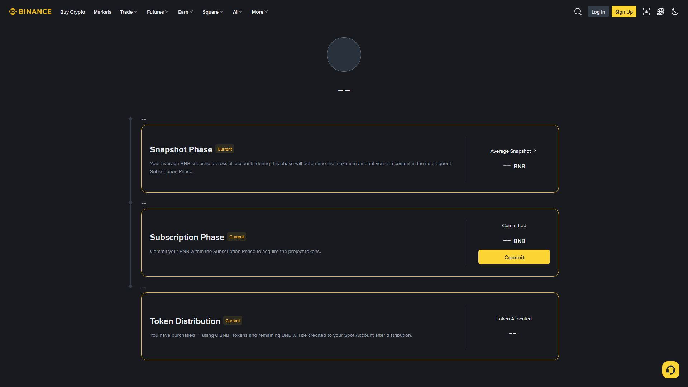

بائننس کے "ٹوکن لانچ" پروگراموں میں تین مختلف راستے ہیں جنہیں اکثر ایک سمجھ لیا جاتا ہے: Launchpad (IEO) جہاں آپ خریدتے ہیں، Launchpool جہاں آپ فارم (اسٹیک) کرتے ہیں، اور Megadrop/HODLer Airdrops جہاں آپ اسنیپ شاٹ/ٹاسک کی بنیاد پر مفت ٹوکن پاتے ہیں۔ اس باب میں تینوں کا فرق اور عمل واضح کیا جائے گا۔

IEO (Initial Exchange Offering): بائننس اپنے پلیٹ فارم سے نئے ٹوکن کی فروخت کا انتظام کرتا ہے۔
1. پروجیکٹ کا اعلان → Subscriber مدت (عموماً چند گھنٹے/دن)
2. اہلیت: BNB (کچھ ہولڈنگ/or DCA شرائط) رکھنا
3. Subscription کے وقت BNB Lock ہو جاتا ہے → حصہ لینے کی مقدار
4. مدت ختم → Allotment/تناسب سے ٹوکن تقسیم
5. باقی BNB واپس + ٹوکن Spot Wallet میںفرض کریں: کل فروخت = 10,000,000 ٹوکن
کل درخواستیں = 1,000,000,000 (100x Over-subscribed)
→ عموماً ہر صارف کو درخواست کا ~1% ہی ملتا ہے
→ باقی BNB واپس1. فعال پروجیکٹ → BNB/FDUSD پول میں اسٹیک
2. مدت (عموماً 7–30 دن) کے دوران نئے ٹوکن کے ریوارڈز
3. مدت ختم → اسٹیک شدہ BNB واپس + نئے ٹوکنیاد رکھیں: Launchpool میں آپ نئے ٹوکن خریدتے نہیں — آپ اپنا BNB/FDUSD اسٹیک کر کے فارم کرتے ہیں اور ریوارڈ پاتے ہیں۔
Megadrop:
- BNB اسٹیک (Simple Earn/Locked) + Web3 ٹاسک مکمل
- اسنیپ شاٹ/پوائنٹس کی بنیاد پر مفت ٹوکن
HODLer Airdrops:
- Simple Earn/Locked/Onchain Earn میں BNB ہولڈنگ
- بائننس خودکار اسنیپ شاٹ لیتا ہے
- کوئی فارمنگ/ٹاسک نہیں — صرف اہلیتاہلیت عام طور پر:
| پروگرام | آپ کیا کرتے ہیں | نتیجہ |
|---|---|---|
| Launchpad (IEO) | BNB لاک کر کے خریدتے ہیں | ٹوکن (رقم لگے) |
| Launchpool | BNB/FDUSD اسٹیک (Farm) | ریوارڈ (معمولی) |
| Megadrop | اسٹیک + ٹاسک | مفت ایئر ڈراپ |
| HODLer | BNB ہولڈ (صرف) | مفت ایئر ڈراپ |
Cliff = پہلا وقفہ جس میں کچھ Release نہیں ہوتا
Vesting = وقفہ وار Release (Quarterly/Monthly)
Lock-up = مقررہ مدت مکمل بندش"خرید، فارم اور ایئر ڈراپ — تین مختلف راستے؛ فرق جانے بغیر حصہ نہ لیں۔" اصول: (1) Launchpool ≠ Launchpad، (2) Over-subscription کا حساب، (3) Vesting/Lock-up پڑھنا لازمی۔